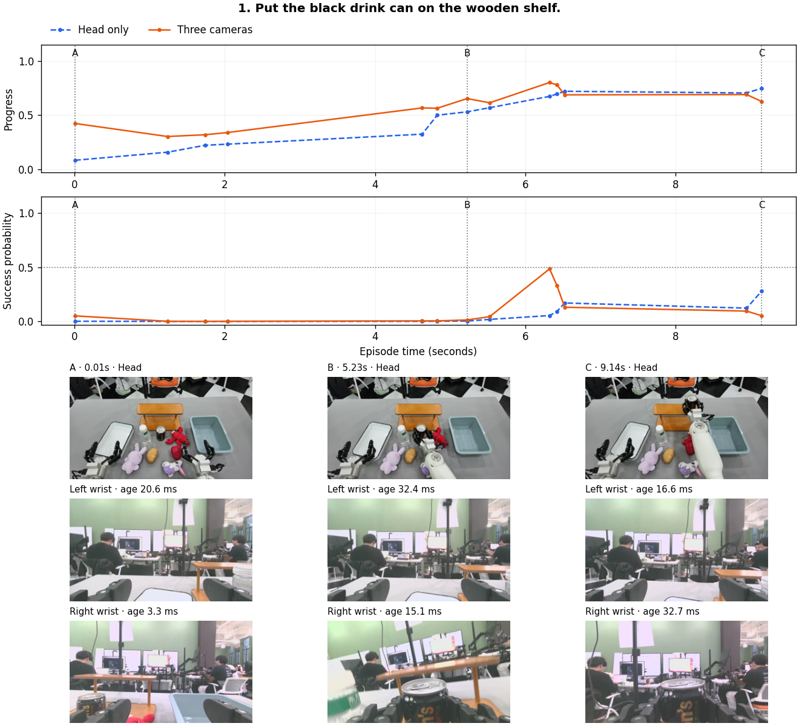
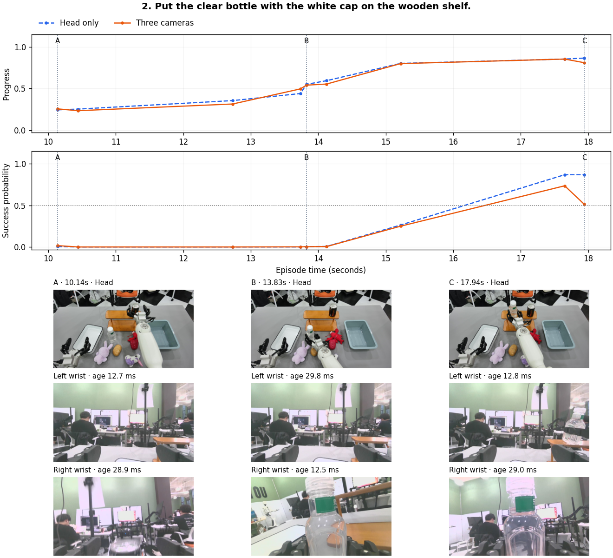
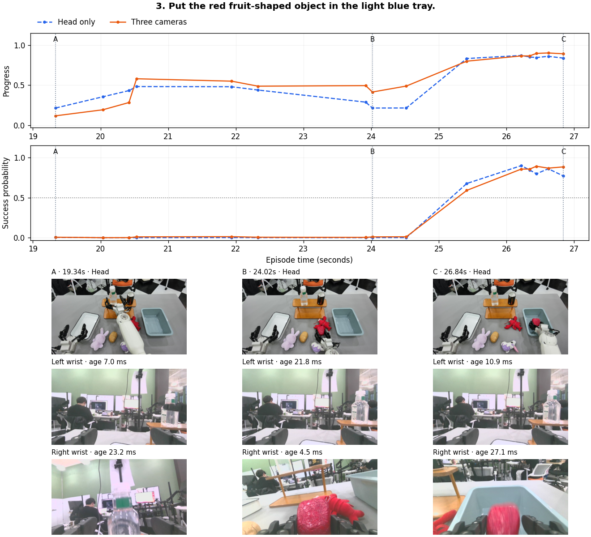
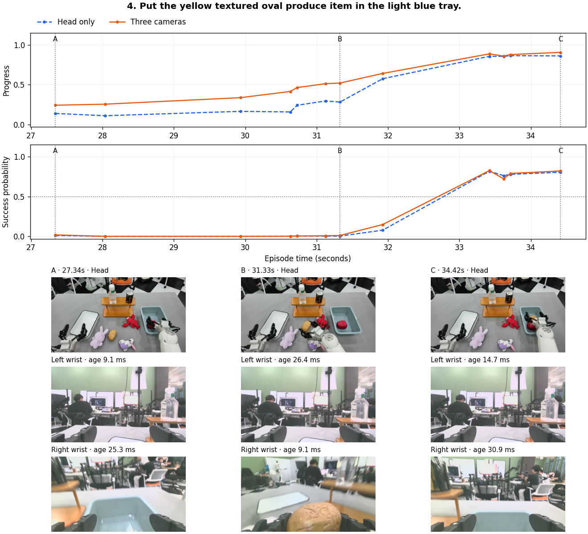
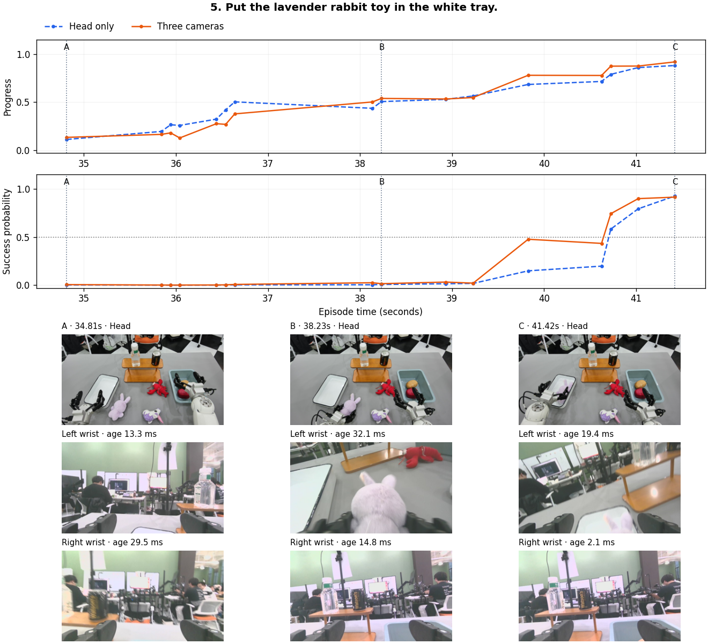
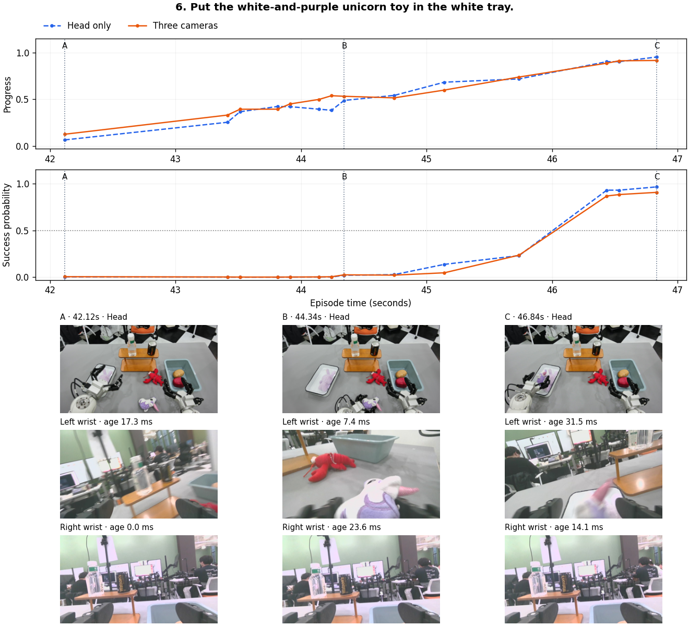
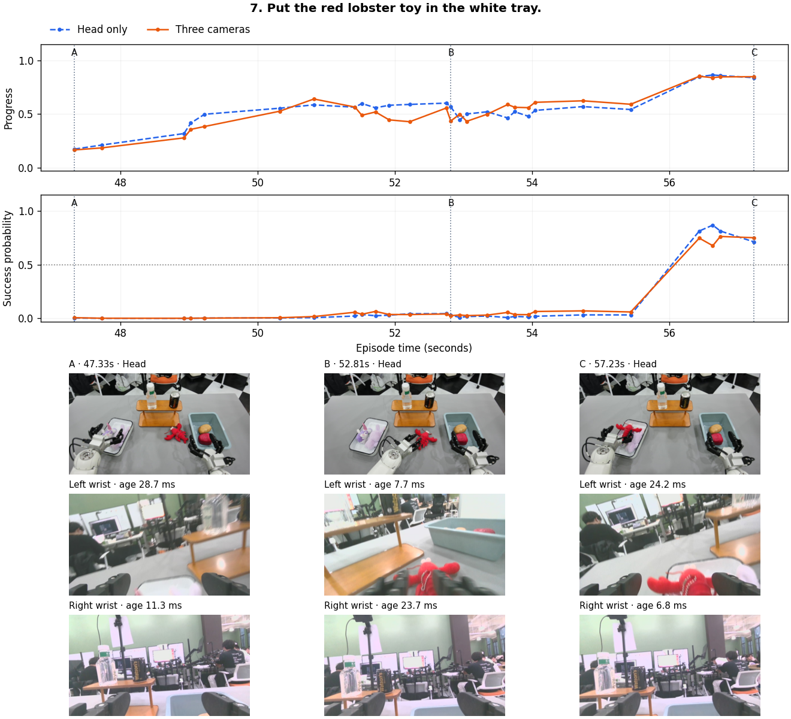
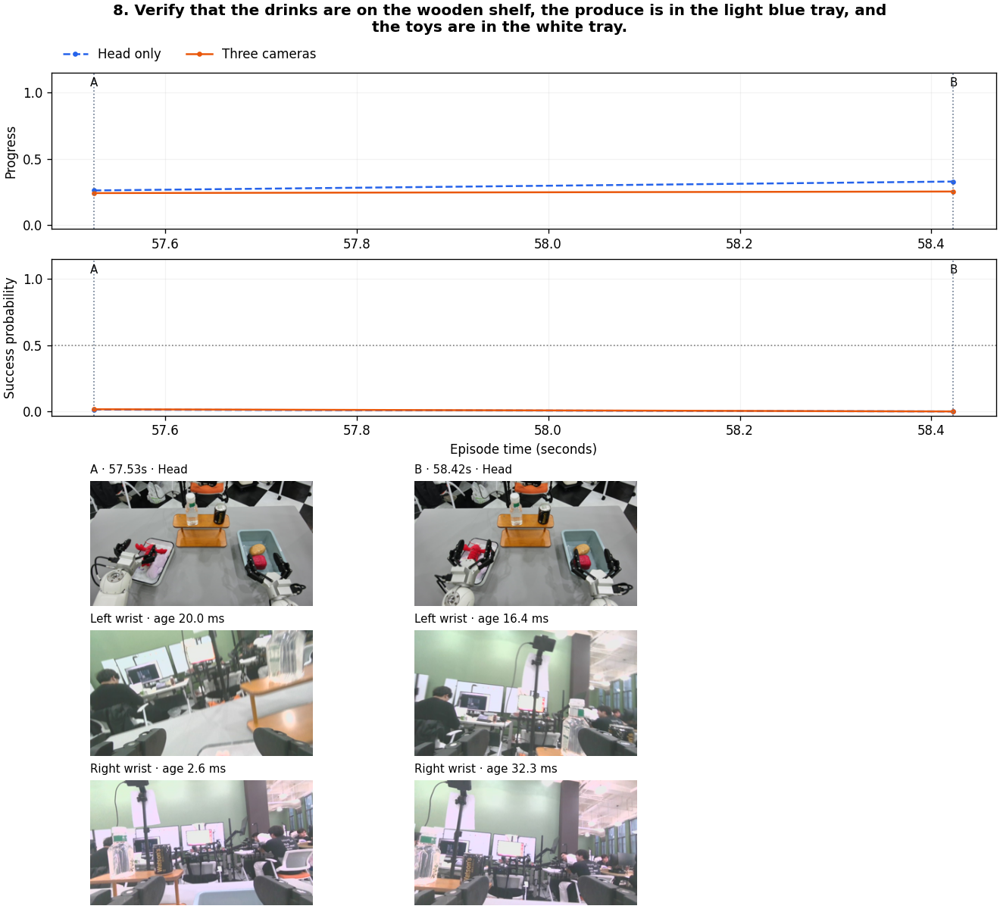

Preserved head-only reports · Input provenance · Paired scores
Same 457 selected times, 33 instruction segments, checkpoint, prompts, and up-to-eight-step histories. Three-camera input tiles head | left wrist | right wrist horizontally, each at 427×240 pixels (combined 1281×240 before Qwen processing). Camera frames are the latest available at or before the head timestamp, verified against raw data. This changes both visual information and input area/layout. Score differences do not establish better accuracy; human success labels are unavailable.
108 frames; mean absolute change: progress 0.076, success 0.037; 0 frames switch sides of the 0.5 success threshold.
13 frames · Final progress: head 0.748 → three 0.626; final success: head 0.279 → three 0.053. Threshold flips: 0.

Source annotation review notes: Task boundary: confirm release and next target in the original head/wrist images.
9 frames · Final progress: head 0.864 → three 0.809; final success: head 0.867 → three 0.512. Threshold flips: 0.

Source annotation review notes: Task boundary: confirm release and next target in the original head/wrist images.
15 frames · Final progress: head 0.837 → three 0.890; final success: head 0.770 → three 0.883. Threshold flips: 0.

Source annotation review notes: Task boundary: confirm release and next target in the original head/wrist images.
12 frames · Final progress: head 0.860 → three 0.905; final success: head 0.805 → three 0.820. Threshold flips: 0.

Source annotation review notes: Task boundary: confirm release and next target in the original head/wrist images.
16 frames · Final progress: head 0.880 → three 0.918; final success: head 0.926 → three 0.914. Threshold flips: 0.

Source annotation review notes: Task boundary: confirm release and next target in the original head/wrist images.
14 frames · Final progress: head 0.952 → three 0.915; final success: head 0.965 → three 0.906. Threshold flips: 0.

Source annotation review notes: Task boundary: confirm release and next target in the original head/wrist images.
27 frames · Final progress: head 0.838 → three 0.847; final success: head 0.711 → three 0.750. Threshold flips: 0.

Source annotation review notes: Task boundary: confirm release and next target in the original head/wrist images.
2 frames · Final progress: head 0.328 → three 0.253; final success: head 0.001 → three 0.001. Threshold flips: 0.

Source annotation review notes: Task boundary: confirm release and next target in the original head/wrist images.; Visible object sorting appears complete; verify support and release before declaring completion.